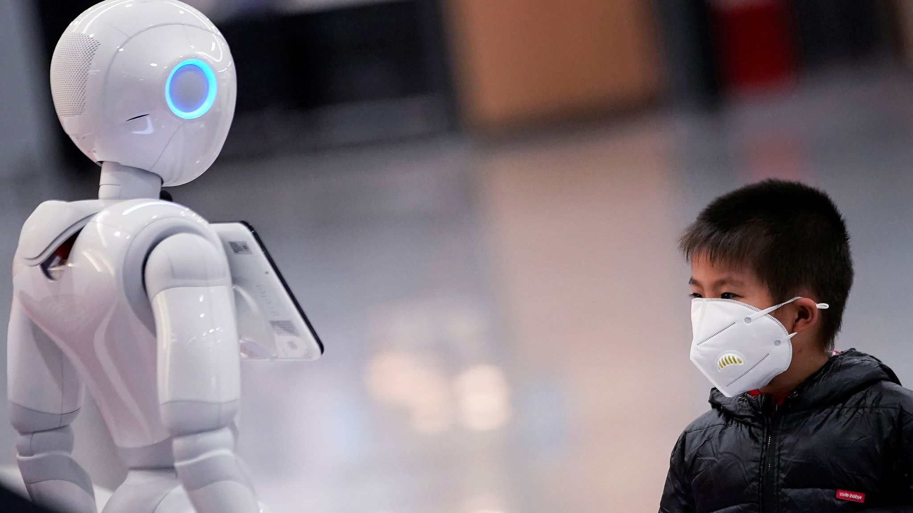

Computer Engineering Role in COVID-19 Pandemic
Links:
The role of technology
If we want to talk about technology in treating this epidemic, the first and simplest thing will be mentioned is the Chinese invention done by the employee (Yi Jinyu), one of the employees of the residential compound (Yiyang), this employee developed the idea of unmanned flight and made it measure the temperature of people from a distance 3 meters by infrared with a 5% error rate and a meter away with a 1% error rate.During the prevention of the emergingcorona virus , the company (Tencent) applied to view the latest news of the virus and to the residential neighborhoods in which the virus was discovered based on information issued by the Centers for Disease Control and Prevention throughout the country, and it allows people the opportunity to detect confirmed cases of infection and their locations Precise easily and intuitively, it currently covers Beijing, Shenzhen, Guangzhou and other more than 130 cities.In another application of the role of technology We found a car in one of the streets of China without a driver, to deliver the parcels to hospitals because of the great need for smart products. As a form of technology intervention, three companies (China Mobile, China Telecom and China Unicom) covered the (Huxhanshan and Yingshan Bohan) Hospital with the fifth generation network in a period not exceeding a day and a half today, and they also established a system of remote dialogue between this hospital and the General Hospital of the Liberation Army. The Lenovo Group provided 2,000 computers and an IT service team stationed on site to build the hospital's information system. The "Orionstar" technology company in Beijing donated medical service robots that can conduct the delivery of the medical test paper, medicine and other tasks according to the hospital needs.
